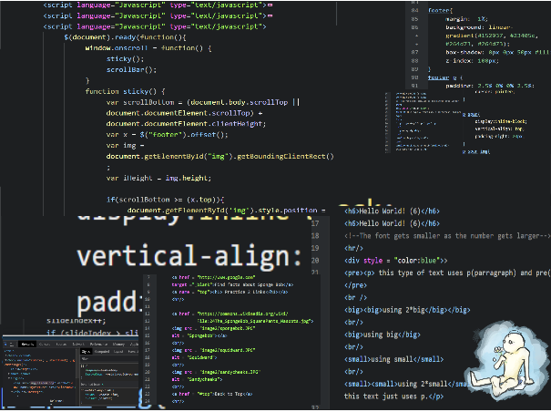

Web and Design is a course to learn the basic forms of HTML, CSS, and JavaScript. Taught at Downingtown East Highschool by Mrs. Engard, Web and design is a fantastic buissness encore class to try out the edges of this growing work field.
Course Description:
"This course offers students the opportunity to express themselves creatively on the internet through self-published websites. They will utilize criteria to evaluate and analyze web pages in a variety of fields to create their own functional, engaging websites that encourage multiple visits. It familiarizes them with attractive and interactive design strategies. Topics include effective use of color, page design, navigation, publishing, and maintaining websites. Students will develop a basic understanding of HTML, CSS, and JavaScript."
Personal Experience
I personally loved this course. It showed me my limits in patience and it taught me how to problem solve my way around tricky area. This course and the projects it presented helped me develop a stronger sense of logic and a different way of approaching things.
As a student who considers persuing CS as a future career, I honestly think learning the basics of HTML, CSS, and JavaScript helps me re-think ways to comunicate to the compiler, and develop new ways of thinking and doing things.
This class has brought me joys and has brought me fustration. While the fustrations were temporary, the motivation that follows to finish or solve the issue brought more happiness when I long last finish the project.
All in all, Web Design and Development has not only allowed me to grow as a person, but also to feed my passion as a programmer. I'd like to thank Mrs. Engard for enduring my endless pestering whenever I have questions and my stubborness and lack of code orginazation. Despite only been in "in-person" school for two weeks this year, I had a lot of fun in this class.
Basic HTML
Tag, Basic Styles, and More
The beginning of the school year compromised of HTML at its basics. It was here that we learned the 5 basic tags, the inline style tags, link, lists, tables, and images.
The projects we worked on was fairly simple. When I look back, I seemed to have been having trouble with just finding content rather than the HTML portion itself.
"Pick a topic – Your topic can be about any school subject (history, art, music, P.E., science, etc.). Create a webpage on the topic. It must include images and, inline styles."
- Sept. 25th, 2020 - Oct. 2nd, 2020
As my first website, I was really proud of it. Now looking back there is a lot I can improve upon. For this project, I choose the pencil because they are a facinating object. As a device to pass down knowledge or to take note of knowledge, the pencil existed alongside humans as long as language did.
"You will be creating an animal information web site utilizing pictures you find on the internet and bio text."
- Oct. 22nd, 2020 - Nov. 12th 2020
The Animal project was a marking period final project. I decieded to put everything in a table and orginize the website in a grid-like fashion. It was also this project, where I first come into contanct with Javascript, and played with it on my own time.
"Use the attached PDFs to add fields to create a survey. Use the attached tutorial to ensure that you have all the requirements."
- Mar. 22nd, 2021 - Mar. 29th 2021
In this project, we learned to create a form. This could be applied to taking in user input. While we didn't learn how to store user input in a database, we did learn how to create a form.
"Create a table (based on the winners of the pulitzer prize) that will match the image given image."
- Apr. 12th, 2021 - Apr. 19th 2021
In this project we learned how to apply more advanced table styles to a a table. This project allowed me to practice reverse enginner the table. While there were hints and directions I could follow, in trying the harder way, this project allowed me to think in a different approach.
CSS
Styles, Styles, and Fashion
In this half, we learned the basics of CSS. This inclued inline styles, internal stylesheets and external stylesheets. This can be page styling, div or section styling, and even image stylings.
The projects here were a little harder, but I started to understand it more as I played with the ideas and the concepts.
"Turn the given document into one that looks like the picture using CSS."
- Nov. 30th, 2020 - Dec. 2nd, 2020
This project was my first project using CSS. It was also the first project where I reversed enginnered a website from a picture. CSS was honestly a little tricky for me so far.
"Using the directions and document, create a website with fixed images."
- Dec. 7th, 2020 - Dec. 20th, 2020
In this project, I am exposed to the idea of having a fixed image as a background. This will impact my future websites, and there would be re-occuring themes of a fixed background.
"Create a three paged website on the topic of a dream vacation site.
- Dec. 14th, 2020 - Jan. 8th, 2021
This project was my third project from scratch, and it was also where I pushed myself to think at new levels. Starting from this project, I started using divs instead of tables and I also continue to fiddle around with Javascript.
"Following instructions, edit the given document to make it look like the example images."
- Apr. 26th, 2021 - May. 4th, 2021
While it was labeled as advanced CSS, I didn't really think it was too advanced. I had encountered almost all of its contents prior to this project. That being said, I did find new tags that I found interesting, and even used them in this project.
"Revise the Animal Project and add JavaScript and Advanced CSS"
- June. 1st, 2021 - June. 8th, 2021
This project wasn't as eventful as any of the other ones, expecially in the light of createing this portfolio as my final project. Nontheless, it was good practice and it was also nice to see my improvements.
JavaScript
Tricks with Code
In JavaScript we learned how to set up alerts, write text from JavaScript to the main document, make a(n) (automatic) slideshow, and fetch the date and time.
I had a little bit of experience with JavaScript outside of class in KhanAcademy, but what I experienced here in the course is a lot different then online. I still struggle a little when coding in JavaScript.
Coding in JavaScript was one of the reasons why I enjoyed Web and Design. It was hard but I enjoyed the challenge presented to me and the satisfaction I recived when I solved the issues.
"Create a website with Javascript images and texts." - Jan. 26th, 2021 - Feb. 19th, 2021
Even if I had already dealt with JavaScript prior to this project, it still didn't make trying to debug code even better. It took me some time to customize the code from the lessons.
"Revise the Dream Vacation project and add javascript to it."
- Feb. 22nd, 2021 - Apr. 4th, 2021
This project was one of the hardest projects because my original code was very messy. It was hard to tell where I was and often got confused as to where I was and the constant scrolling in the repetative code made it very tedious.
Side Projects
Outside of Class
I also spent time outside of class working with HTML, CSS, and JavaScript. This was not only to familiar myself more with the concepts, but to give myself more time to practice.
I could also use this time to play with new concepts and apply new topics a scenerios and play with the results. I was nice to create more issues for me to troubleshoot, and it was satisfying watching my understanding of the concepts increase.

"Create a spanish newspaper based off of current events."
- Jan. 6th, 2021 - Jan. 8th, 2021
For this project, I actually had noticed an embed feature on youtube and wanted to try it out. This was before learning how to embed multimedia. I wrote about January 5th, "insurrection" at the White House.
"Work with a partner to create an Infographic on an awareness topic."
- Jan. 19th, 2021 - Jan. 28th, 2021
For this project, my partner and I made an infographic on smoking. Because it was much easier for me to customize our page, and add an interactive layer to it, I created a website based of of the ParrallexScrolls template.
"Present the differences between RNA ans DNA." - Mar. 22nd, 2021 - Apr. 18th, 2021
For this project, I deceided to use a webpage not only for the interactive element and ability to customize, it was also because there wasn't really any big projects at this time, and I was going stale in HTML, CSS, and JS department.